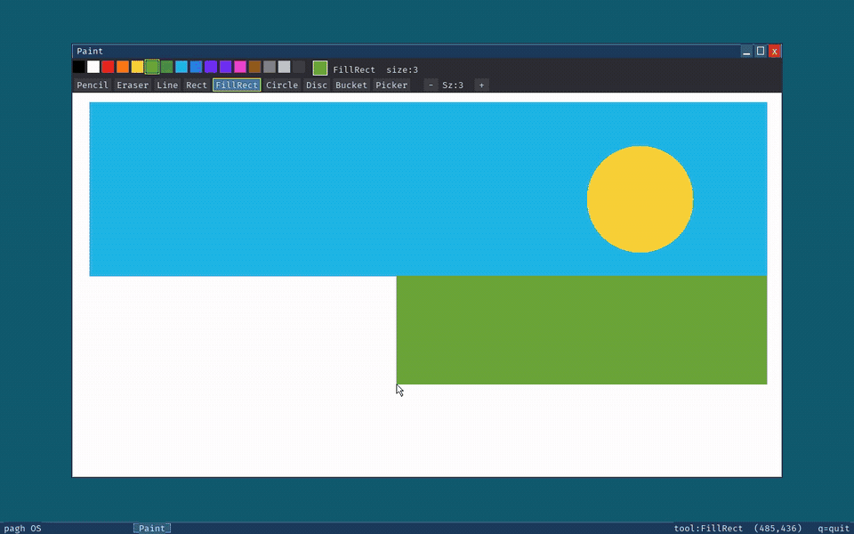

Демо-образ
Загрузочный образ из релиза: внутри shell, paint, nano+ и темы. Скачали — запустили.
tar xzf pagh-demo-x86_64.tar.gz
cd pagh-demo-x86_64
./run.sh
Pagh-OS — 64-битное ядро на Rust (#![no_std]), которое загружается через
Limine на реальном UEFI. Своя ext2 с журналом write-ahead-log, собственный стек
TCP/IP, framebuffer-GUI с paint и nano+, Linux-бинарники и apt с проверкой
OpenPGP-подписей Debian — всё в одном дереве исходников.
одна команда · qemu-system-x86_64 + OVMF · тулчейн Rust не нужен
[INFO] serial [INFO] base revision [INFO] limine responses [INFO] gdt + idt [INFO] syscalls [INFO] pmm [INFO] vmm [INFO] heap [INFO] apic [INFO] drivers [INFO] virtio [INFO] scheduler [INFO] vfs [INFO] ext2 mounted at /mnt [INFO] net Hello from ring3 user process! [INFO] interrupts enabled [INFO] net: DHCP lease acquired: 10.0.2.15/24 gw 10.0.2.2 ======================================== Welcome to pagh OS Shell! ======================================== Type 'help' for available commands pagh:/>
pagh поднимает serial, GDT/IDT, битмапный менеджер физической памяти, 4-уровневый пейджинг, кучу, APIC, PS/2- и USB-ввод, framebuffer-консоль с программным курсором, виртуальную файловую систему, загрузчик ELF64, вытесняющий планировщик и интерфейс SYSCALL / int 0x80 — по одной подсистеме за раз.
Всё, что обычно приходит «из коробки», здесь написано с нуля: сетевой стек (IPv4/IPv6, TCP с SACK и window scaling, DHCP, DNS, NDP/SLAAC), драйверы e1000, virtio-blk, NVMe и xHCI, ext2 с журналом, пакетный менеджер с проверкой подписанных метаданных Debian и слой совместимости с Linux-сисколлами, в котором работает CPython 3.16.
Цель — не догнать Linux, а показать операционную систему целиком: каждая подсистема
документирует себя в src/<подсистема>/README.md — дизайн, инварианты,
тесты и честные ограничения.
Быстрее всего — готовый демо-образ: тулчейн Rust не нужен, только qemu-system-x86_64 и OVMF.
Загрузочный образ из релиза: внутри shell, paint, nano+ и темы. Скачали — запустили.
tar xzf pagh-demo-x86_64.tar.gz
cd pagh-demo-x86_64
./run.shRust nightly с rust-src для build-std, QEMU и OVMF в PATH. Limine скрипт скачает сам.
git clone https://github.com/ccclosed/Pagh-OS
cd Pagh-OS
./build.sh --release --stage
./run.sh --releaserun.cmd проводит весь конвейер: cargo build, линковка PAGH.elf, staging ESP и QEMU с e1000.
run.cmd build
run.cmd run
run.cmd run releasepagh не форматирует диск сам при загрузке. Он листит видимые разделы и ждёт: форматирование — только по явному F и вводу имени раздела обратно, а 20-секундный таймаут выбирает неразрушающий путь. Подключайте образ к выделенному пустому разделу или диску.
Ни одного внешнего сетевого крейта, ни готового TCP/IP, ни готовой ФС. Всё, что ниже, живёт в src/ и документирует себя.
GDT/IDT/TSS/IST, битмапный PMM, 4-уровневый VMM с map_mmio, куча на galloc, ACPI (MADT), LAPIC и I/O APIC. SSE включается для ring 3, само ядро — soft-float.
Limine/UEFI поднимает ядро, framebuffer-консоль 1280×800 получает цветной prompt и статус-строку. Disk-меню листит разделы и ничего не стирает без человека.
ext2-совместимая read/write ФС с несколькими группами блоков и журналом write-ahead-log: большие записи коммитятся ограниченными порциями, том масштаба GiB. virtio-blk, NVMe, GPT/MBR.
Свой dual-stack TCP/IP: ARP, ICMP, DHCPv4, IPv6 NDP/SLAAC, TCP с window scaling, SACK и Reno, UDP-сокеты, DNS A+AAAA. Поверх e1000 или USB-RNDIS (тетеринг телефона).
Консоль рисует через RAM shadow buffer и выталкивает кадр один раз: простаивающий shell спит. 2D-примитивы, программный курсор, окно paint с палитрой, редактор nano+, панель settings.
Вытесняющий round-robin планировщик ~1 кГц, потоки ядра, ring-3 процессы, SYSCALL/int 0x80, POSIX-сигналы, process groups и job control, fork/clone с COW.
Статические и glibc-dynamic ELF x86_64 исполняются в ring 3: epoll/eventfd, unix-сокеты, raw-mode termios, синтетический procfs. Внутри работает CPython 3.16 и Lua 5.5.
apt update/install скачивает Debian-индекс по TLS 1.3, потоково разжимает gzip/xz/zstd и ставит .deb. Три независимых проверки: сертификат, подпись InRelease, SHA-256 и размер.
Собственный xHCI: клавиатуры и мыши по boot-протоколу, hub-тайминги как в hub.c, Reset Endpoint при сбое. Плюс RNDIS поверх того же контроллера — сеть через телефон.
Каждый кадр — снимок QEMU 1280×800: эти пиксели рисует само ядро. Ни хостового рендеринга шрифтов, ни сборки скриншотов.

Подсистемы не прячутся за внешними сервисами: это модули одного src/, и каждый папка-модуль объясняет свой дизайн.
arch/CPU: GDT/IDT/TSS/IST, SYSCALL, int 0x80, Linux-compatmemory/PMM, 4-уровневый VMM, map_mmio, куча gallocdrivers/framebuffer, PS/2, virtio, NVMe, xHCI, HID, RNDISfs/ext2 read/write, WAL-журнал, GPT/MBRvfs/узлы, права, монтирования, синтетический procfsnet/ARP/ICMP/DHCPv4, IPv6 NDP/SLAAC, TCP/SACK, DNSpkg/apt: индексы, .deb, OpenPGP, TLS 1.3task/планировщик, потоки, сигналы, FPU, Linux-compatshell/интерпретатор, команды и GUI-приложенияsecurity/unsafe-policy и границы ring 3boot.rsпорядок загрузки, каждая фаза — fallible-шагprovision.rsидемпотентный first-boot: скелет /mnt и релизserial → base revision → limine
gdt + idt → syscalls → pmm
vmm → heap → apic → drivers
virtio → scheduler → vfs
ext2 mounted at /mnt
net → interrupts enabled
# DHCP lease приходит асинхронноМодель безопасности названа прямо, вместе с пробелами. Это документация, а не маркетинг.
set*id, POSIX owner/group/other на open, execve и мутациях каталогов.InRelease, затем SHA-256 и размер Packages и каждого .deb.fsuid.Шесть гейтов на каждый коммит: форматирование, debug- и release-сборка, host-тесты, unsafe-policy и сверка утверждений AGENTS.md с деревом.
Команда selftest гоняет property/regression-набор против живого состояния ядра: PMM, VMM, ext2, VFS, планировщик, сигналы, парсеры TLS/apt. Вердикт печатается машинно-проверяемым на serial.
Чистая логика ядра подключается в host-tests/ через #[path] — тесты исполняют те же файлы, которые компилирует ядро. Новый чистый модуль без свойства считается подозрительным.
Гостевой драйвер прогоняет сценарии selftest, local-mirror, live-update, bigindex и shell. Маркер [BOOTID] доказывает, что вердикт принадлежит именно этому прогону.
Демо-образу нужны только qemu-system-x86_64 и OVMF. Ctrl+Alt+G отпускает мышь, quit выходит. Сборка запускается без вопросов — install python3 уже из shell.
tar xzf pagh-demo-x86_64.tar.gz
cd pagh-demo-x86_64
./run.sh